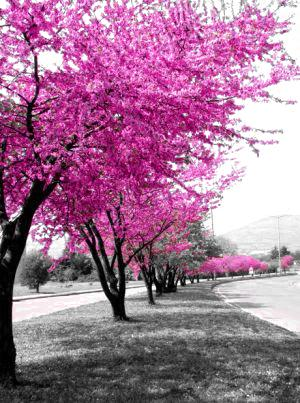

Erguvan
Bu yazıda benim çok şık bulduğum bir kod yazalım. Amacımız, verilen bir resmi siyah beyaz yapmak fakat belli bir rengi aynen bırakmak. Schindler'in Listesi'ndeki kırmızı montlu kız sahnesinde olduğu gibi veya bir meşk klişesi olan siyah beyaz arkaplana renkli gül efekti gibi bir şey yapalım. Ve bunu Boğaziçi'nin simgesi erguvan rengi için yapalım. Yani uzun lafın kısası, erguvan ağacının olduğu bir resme bir maske uygulayıp erguvan renginde olmayan yerlerini siyah beyaza çevirelim.
Resmimiz şu olsun

Akla ilk gelen yöntem, resmi okuduğumuz özgün uzay olan RGB renk uzayında bir filtreleme yapmak olacaktır. Fakat bu hem kımızı, hem yeşil, hem de mavi renk kanallarındaki erguvana denk gelen aralıkları bilmemiz demek olacaktır.
Öte yandan HSV renk uzayı ben bu iş için biçilmiş kaftanım diye bize seslenmektedir. HSV uzayındaki kanallar olan Hue (renk, ton), Saturation (doygunluk) ve Value (aydınlık, şiddet) kanallarından ilkine bakıp erguvanın hangi ton aralığında olduğunu bulmak bize yetecektir. Şimdi resmimiz için Hue kanalını kullanarak bir renk histogramı çıkaralım ve uygun biçimde çizelim
rgbResim = imread('erguvan.jpg');
hsvResim = rgb2hsv(rgbResim); % Resmi HSV uzayına çevir
hKanali = 360.*hsvResim(:,:,1); % Hue (renk) kanalını 0-360 arasında al
% Renk histogramının çizimi
figure
kutuSinirlari = 0:360; % Histogram kutularının sınırları
N = histc(hKanali(:),kutuSinirlari); % Renk histagramını çıkar
hBar = bar(kutuSinirlari(1:end-1),N(1:end-1),'histc'); % Histogramı çiz
set(hBar,'CData',1:360,... % Çubukların renklerini 360 tane
'CDataMapping','direct',... % renk ile güncelle ve kenar
'EdgeColor','none'); % renklendirmesini kaldır
colormap(hsv(360)); % Renk haritasını 360lık hsv yap
axis([0 360 0 max(N)]); % Eksenin sınırlarını değiştir
set(gca,'Color','k'); % Arkaplan rengini siyah yap
set(gcf,'Pos',[50 400 560 200]); % Figürün boyunu güncelle
xlabel('HSV renk (derece cinsinden)');
ylabel('Kutu başına pixel');
Gördüğünüz gibi resimde en çok erguvan tonlarında pixel var. Sarı ve yeşil de az değilmiş, biraz da mavi var. Şu anda erguvan rengini nasıl çıkarabileceğimizi artık anlamışsınızdır! Renk kanalında 300-340 aralığı dışında kalan yerler erguvan olmayan pixelleri gösteriyor. Bu pixellerin doygunluğunu sıfıra çekersek onları siyah beyaz yapmış olacağız. Hadi bunu yapalım ve sonucu görelim
sKanali = hsvResim(:,:,2); % Saturation (doygunluk) kanalını al
erguvanOlmayanlar = ... % Erguvan olmayan bölgeleri seç
~(hKanali > 300) & ...
(hKanali < 340);
sKanali(erguvanOlmayanlar) = 0; % Seçilen piksellerin renk doygunluğunu sıfırla
hsvResim(:,:,2) = sKanali; % Doygunluk kanalını güncelle
rgbResim = hsv2rgb(hsvResim); % Resmi RGB uzayına geri çevir
imshow(rgbResim)
imwrite(rgbResim,'erguvan2.jpg')

Sonuç şahane! Erguvan yerine farklı renkleri de filtreleyebilirsiniz. Artık MATLAB'la sevgiliniz için siyah beyaz arkaplan üstüne kırmızı gül yapabilirsiniz! :) Ama ayrılırsanız sebebi ben değilim, bununla noktalayalım!
Not: Bu yazıyı yazarken SO'daki şu şık cevabı kullandım.
Güncelleme: A. Tahir İnce'nin önerisi üzerine aynı yöntemi OpenCV kullanılarak da yazdım. İlgili yazıya buradan erişebilirsiniz.


{kind=link}
{kind=link}
11 yorum
Steve On Image Processing halt etsin, cok nefis yazi olmus. Eline saglik ustat.
Ne demek :)
Devamı gelecek...
Bu kodu openCV kütüphanesini kullanarak kamera görüntülerine de uygularsan tadından yenmez artık.
Hmm, OpenCV bilgimi tazelememem lazım, bir yıldır kullanmıyorum, bu biraz zor bir menü olacak gibi. Tatlı niyetine onu da menüye alalım :)
Vaktim olursa ben bir şeyler karalarım OpenCv de
yada bu koddan
http://derindelimavi.blogspot.com/2011/04/renk-filitresi.html
siz yapabilirsiniz
Şu sıralar OpenCV2'ye bakıyorum ben de. Zaman bulursam yapacağım. Teşekkürler.
Merhaba. hsv yöntemi ile resimdeki siyah alanlar dışında kalan alanları beyaz yapabilir miyiz?
Siyah piksel değerleri [0.0 0.0 0.0]'dır. RGB'de de HSV'de de aynı değere sahip oldukları için RGB'den HSV'ye geçmenin bir avantajı olacağını sanmıyorum. Yazı, renkli pikseller için uygun bir yöntemi içeriyor.
İsmail bey Siyah piksel değerleri [0.0 0.0 0.0] olduğunda sorun yok fakat bazen renk değerleri [5 5 5] gibi olduğunda da resmin rengi siyaha yakın oluyor.Yada bu rgb değerleri kullandığımız resme göre değişiyor.
Anlıyorum. Bu durumda HSV uzayında sadece V değerine bakmak işinizi çözebilir. Örneğin V değeri 10'un altındaysa oraları koyu (siyah) olarak değerlendirip oraları belirleyebilirsiniz.
Teşekkürler iyi çalışmalar :)